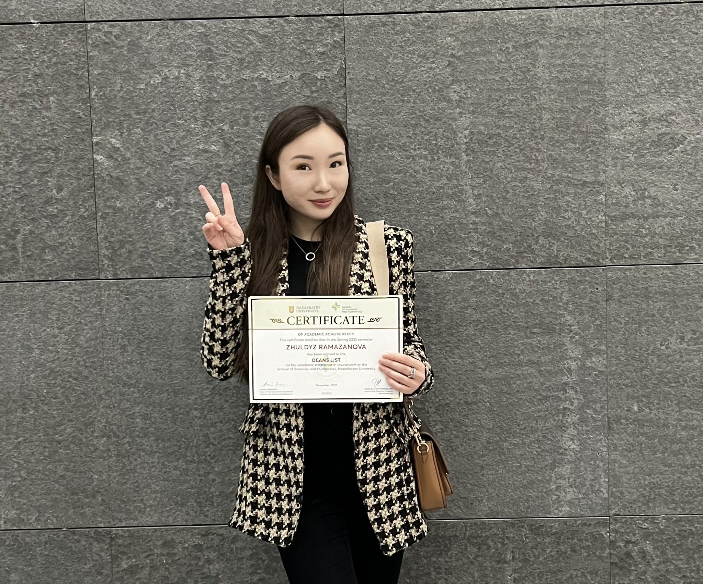

Education, courses, and skills
I am a senior student at Nazarbayev University majoring in Political Science and International Relations and minoring in Sociology. In the future, I am planning to get Masters degree in Europe in Human Rights (in Kazakh we say, buyursa).

The courses I liked the most were Nationalism Studies, Environmental Politics, Law and Society , and even though, computer science was extremely hard for me at the beginning, I get new skills during my CSCI111 course (I did this page thanks to that knowledge).
I am a certified trainer for the independent elections observers and I can teach people being elections' observers.
During courses in quantitative methods and research, I got more proficient in using R-studio and Excel that were extremely helpful for analyzing and working with big-data.
I can speak several languages:
Kazakh - my native language,
Russian - fluently,
English - fluently,
French - fluently.